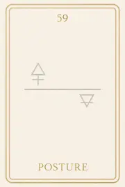

Famille 5 – Thot (Mercure)
La famille 5 de l’oracle Sia, guidée par Mercure et Thot, explore la parole vibratoire, l’expression juste et la pensée alignée. Elle éclaire les formes mentales que l’âme a créées pour comprendre, convaincre ou se protéger. Ici, la parole devient miroir de la conscience : elle peut guérir, tromper ou révéler — selon la clarté intérieure de celui qui la prononce.
Carte 5 – Murmure
Mots-clés : mémoire vibratoire, murmure spirituel, parole intérieure symbolique, début dialogue intérieur, confusion mentale subtile
Chiffre caché : 95
Lecture inversée : 9 → 5
Divinité principale : Thot
Planète secondaire : Soleil
Divinité secondaire : Râ
Interprétation de la carte 5 : Murmure (droite)
Lecture intuitive rapide
Après l’orage de la tension intérieure, l’âme entre dans un espace mental plus subtil. C’est ici que les premières pensées se manifestent : des fragments de souvenirs, des échos d’idées, des images, des noms, des scènes… Mais rien n’est encore clair. Elle perçoit des bruits intérieurs, comme des mots étouffés, des sensations floues. C’est le début de la mémoire vibratoire.
1. Caractère de la personne
L’âme entend sa propre voix intérieure, mais encore confuse, incomplète. Elle capte des signaux, des intuitions, des images fugaces.
2. Plan affectif
Les émotions passées remontent sous forme de souvenirs flous, comme des murmures affectifs, ni douloureux ni heureux, juste présents.
5. Plan spirituel
Spirituellement, MURMURE est le début du dialogue intérieur, le moment où l’âme se souvient qu’elle sait, mais ne sait pas encore ce qu’elle sait. Thot l’écoute.
Carte 5 : Murmure (inversée)
1. Caractère de la personne
L’âme rejette ces bruits intérieurs, ou les confond avec le mental terrestre. Elle croit entendre, mais n’écoute pas vraiment.
2. Plan affectif
Les anciens liens affectifs reviennent sous forme de voix intérieures parasites. L’âme projette ou s’accroche à des paroles anciennes.
5. Plan spirituel
Le verbe sacré est brouillé. L’âme n’arrive pas à distinguer le souvenir spirituel de la pensée humaine. Elle s’égare dans des illusions mentales.
Résumé de la carte 5 : Murmure
MURMURE est le premier retour de la mémoire vibratoire. L’âme entend sa propre voix intérieure, mais encore fragmentée.
À l’endroit, elle commence à écouter le souffle de sa vérité.
À l’envers, elle est perdue dans le bruit des pensées d’avant.
Carte 14 – Livre de vie
Mots-clés : : mémoire intérieure, traces du passé, lecture de soi, empreinte vibratoire, conscience de soi
Chiffre caché : 86
Lecture inversée : 8 → 6
Divinité principale : Thot
Planète secondaire : Terre
Divinité secondaire : Geb
Interprétation de la carte 14 : Livre de vie (droite)
Lecture intuitive rapide
L’âme entre dans une mémoire stable. Ce n’est pas une pensée, ni un souvenir : c’est un champ inscrit, un livre sans pages, où tout ce qu’elle a été, vibre encore, sans mensonge, sans effet. Elle ne lit pas, elle reçoit. Une ligne intérieure s’ouvre, une forme subtile où le langage sacré de sa propre vie s’imprime doucement en elle. Le LIVRE DE VIE n’est pas un objet. C’est une présence vibratoire : celle de ce qu’elle a écrit en vivant.
1. Caractère de la personne
L’âme entre dans ce qu’elle a écrit en vivant. Chaque pensée, chaque mot, chaque silence s’est inscrit. Elle touche cette mémoire, sans mentaliser.
2. Plan affectif
L’âme ressent la trace de ses liens, de ses attachements, de ses séparations. Non pas dans l’émotion, mais dans une forme stable, comme une empreinte énergétique.
5. Plan spirituel
Le Livre de Vie s’ouvre sans jugement. Thot montre, sans commenter. L’âme commence à ressentir la géométrie de ce qu’elle a été, non pour se condamner, mais pour apprendre à voir avec justesse.
Carte 14 : Livre de vie (inversée)
1. Caractère de la personne
L’âme refuse d’entrer dans sa propre mémoire. Elle rejette ce qu’elle a écrit, ou cherche à en détourner la forme.
2. Plan affectif
Les anciennes relations réapparaissent sous forme de mots, de schémas. Mais l’âme n’en reconnaît pas la signature vibratoire. Elle évite la lecture, ou s’y perd.
5. Plan spirituel
Thot ouvre le livre, mais l’âme détourne le regard. L’âme refuse d’assumer le langage de ses actes, ou fuit le savoir de ce qu’elle a été.
Résumé de la carte 14 : Livre de vie
LIVRE DE VIE est l’entrée dans la mémoire vibratoire du soi. Tout ce que l’âme a transmis, formulé ou tout est inscrit. Elle n’en tire pas encore de leçon, mais ressent la structure de ce qu’elle a vécu.
À l’endroit, elle accepte de recevoir.
À l’envers, elle refuse de voir, ou nie ce qu’elle lit en elle.Carte 23 – Histoire
Mots-clés : : récit de vie, mémoire personnelle, vérité intérieure, passé révélé, conscience du vécu
Chiffre caché : 104
Lecture inversée : 4 → 0 → 1
Divinité principale : Thot
Planète secondaire : Jupiter
Divinité secondaire : Amon-Rê
Interprétation de la carte 23 : Histoire (droite)
Lecture intuitive rapide
L’âme lit ce qu’elle a vécu. Pas symboliquement. Littéralement. Les faits sont là, dans l’ordre, dans le détail, sans maquillage, sans commentaire. C’est l’histoire brute de ce qu’elle a été, de ce qu’elle a fait, de ce qu’elle n’a pas fait. Elle ne comprend pas encore. Elle ne juge pas encore. Elle prend connaissance. Et ce savoir, aussi neutre soit-il, commence à résonner en elle.
1. Caractère de la personne
L’âme lit le fil de ce qu’elle a vécu. Elle observe les actes, les choix, les oublis.
2. Plan affectif
L’âme ressent la distance du récit. Rien ne l’accuse, mais tout est là.
5. Plan spirituel
L’âme est face à ce qui a été. L’histoire ne ment pas. Elle attend d’être reconnue.
Carte 23 : Histoire (inversée)
1. Caractère de la personne
L’âme refuse de se reconnaître dans ce récit. Elle rejette ce qui est pourtant inscrit.
2. Plan affectif
L’âme ressent de la honte, ou du déni. Elle pense que ce qu’elle lit ne lui appartient pas.
5. Plan spirituel
L’âme se coupe de la mémoire écrite. Elle veut oublier au lieu de regarder.
Résumé de la carte 23 : Histoire
HISTOIRE est le moment où l’âme lit ce qu’elle a vécu. Pas d’interprétation, pas de filtre. C’est le récit brut, inscrit par Thot.
À l’endroit, elle accepte de lire.
À l’envers, elle refuse ce que ce récit lui montre.
Carte 32 – Ecriture
Mots-clés : : : vérité intérieure, mémoire vibratoire, loi personnelle, intentions passées, responsabilité des pensées
Chiffre caché : 122
Lecture inversée : 2 → 2 → 1
Divinité principale : Thot
Planète secondaire : Mars
Divinité secondaire : Sekhmet
Interprétation de la carte 32 : Ecriture (droite)
Lecture intuitive rapide
Tout a été dit. Même si les mots n’ont pas été prononcés, l’intention a parlé. L’âme regarde ce qu’elle a inscrit en elle, ce qu’elle a pensé trop fort, ce qu’elle a formulé comme vérité, et qui est devenu loi vibratoire. Thot ne juge pas. Il tend la tablette. Et l’âme lit. Elle sait si ce qu’elle voit a été tenu, ou trahi. Elle sait si ce qui a été écrit était sincère, ou manipulé. Sekhmet ne parle pas. Elle chauffe les lignes, jusqu’à ce que la mémoire brûle, ou soit transmutée. Ce n’est pas la parole extérieure qui est jugée. C’est l’écriture intérieure.
1. Caractère de la personne
L’âme lit ce qu’elle a cru, pensé, affirmé. Elle reconnaît sa propre vérité intérieure, même si elle a changé.
2. Plan affectif
L’âme voit les phrases dites ou retenues, les intentions posées, les serments formulés ou trahis. Elle ne nie rien.
5. Plan spirituel
L’âme relit sa propre écriture intérieure. Et cette lecture peut devenir purification, si elle ose la recevoir.
Carte 32 : Ecriture (inversée)
1. Caractère de la personne
L’âme refuse de voir ce qu’elle a gravé en elle. Elle nie la responsabilité de ses pensées et de ses actes intérieurs.
2. Plan affectif
L’âme rejette l’inscription vibratoire de ce qu’elle a dit ou tu dans ses liens. La mémoire devient tension.
5. Plan spirituel
L’âme fuit sa propre loi intérieure. L’écriture devient brûlure, ou boucle karmique si elle n’est pas transmutée.
Résumé de la carte 32 : Ecriture
ÉCRITURE est le moment où l’âme lit ce qu’elle a inscrit dans sa mémoire vibratoire. Thot tend la tablette. Il ne juge pas.
À l’endroit, l’âme accepte de relire ses vérités.
À l’envers, elle fuit ce qu’elle a voulu oublier — mais qui reste inscrit.
Carte 41 – Toi
Mots-clés : : lien mental, parole non dissoute, mémoire affective, mot intérieur, attachement invisible
Chiffre caché : 113
Lecture inversée : 3 → 1 → 1
Divinité principale : Thot
Planète secondaire : Mercure
Divinité secondaire : Thot
Interprétation de la carte 41 : Toi (droite)
Lecture intuitive rapide
L’âme entend un mot revenir. Pas dans le bruit. Pas dans le souvenir. Dans le silence intérieur. Et ce mot, c’est "Toi". Elle ne sait plus à qui elle l’a dit. Mais elle sent qu’il reste là, comme une vibration active, comme un lien non dissous. Peut-être un reproche, peut-être un vœu, peut-être un serment. Toi. Celui ou celle qu’elle a nommé. Celui ou celle à qui elle a parlé, ou pensé, ou crié. Et ce mot n’a jamais été repris. Alors il agit encore. Non sur l’autre — mais sur elle-même. Thot l’extrait du silence. Il le montre sans émotion, sans souvenir. Juste comme une phrase encore vivante dans la structure de l’âme.
1. Caractère de la personne
L’âme entend une phrase qu’elle a portée. Elle comprend qu’un mot l’habite encore.
2. Plan affectif
Un lien n’a pas été totalement libéré. L’âme observe ce qu’elle a dit ou voulu dire à l’autre.
5. Plan spirituel
Un verbe non dissous résonne encore. L’âme peut maintenant le laisser partir, ou le reformuler.
Carte 41 : Toi (inversée)
1. Caractère de la personne
L’âme nie l’impact de ses pensées. Mais un mot ancien continue de la définir.
2. Plan affectif
L’âme reste attachée à une parole dite ou reçue. Le lien mental se prolonge malgré elle.
5. Plan spirituel
L’âme parle encore en fonction de l’autre. Elle n’a pas encore repris sa vibration propre.
Résumé de la carte 41 : Toi
TOI est le moment où l’âme entend le mot qu’elle a lancé autrefois, et qui vit encore en elle. Ce mot peut libérer, ou maintenir un lien.
À l’endroit, elle l’accueille.
À l’envers, elle le nie — mais il agit.
Carte 50 – Parole
Mots-clés : : parole juste, communication intérieure, vérité vibratoire, mots blessants, alignement personnel
Chiffre caché : 131
Lecture inversée : 1 → 3 → 1
Divinité principale : Thot
Planète secondaire : Vénus
Divinité secondaire : Hathor
Interprétation de la carte 50 : Parole (droite)
Lecture intuitive rapide
L’âme écoute ce qu’elle a dit. Pas seulement avec la voix. Avec sa pensée, son regard, son silence aussi. Elle voit les mots qu’elle a lancés, et ceux qu’elle a retenus. Elle reconnaît la forme qu’elle a donnée au vrai. Par habitude, par peur, ou pour être entendue. Thot lui montre la structure, Hathor lui révèle la vibration. L’âme comprend que la parole, même juste, peut être fermée si elle ne vibre pas d’amour. Elle regarde ce qu’elle a affirmé. Et ce que ses mots ont construit. Ou figé.
1. Caractère de la personne
L’âme observe la manière dont elle a parlé. Elle cherche la cohérence entre mot, pensée et vibration.
2. Plan affectif
L’âme reconnaît les mots qu’elle a utilisés pour couvrir un manque. Elle revient à une parole vraie.
5. Plan spirituel
L’âme comprend que dire, ce n’est pas forcément exprimer. Elle choisit de parler depuis l’alignement.
Carte 50 : Parole (inversée)
1. Caractère de la personne
L’âme reste accrochée à une parole mentale. Elle confond formulation et vérité.
2. Plan affectif
L’âme croit dire l’amour, mais parle depuis la peur. Ses mots sont justes mais froids.
5. Plan spirituel
L’âme enferme le vrai dans des formes apprises. Sa parole résonne sans lumière.
Résumé de la carte 50 : Parole
PAROLE est le moment où l’âme écoute ce qu’elle a dit. Elle perçoit la vibration derrière les mots.
À l’endroit, elle ajuste.
À l’envers, elle parle sans vérité.
Carte 59 – Posture
Mots-clés : : posture relationnelle, parole alignée, communication défensive, authenticité émotionnelle, vérité intérieure
Chiffre caché : 140
Lecture inversée : 0 → 4 → 1
Divinité principale : Thot
Planète secondaire : Saturne
Divinité secondaire : Osiris
Interprétation de la carte 59 : Posture (droite)
Lecture intuitive rapide
L’âme observe la forme qu’elle a tenue dans l’échange. Elle regarde comment elle s’est positionnée, ce qu’elle a dit, ce qu’elle a retenu, ce qu’elle a affirmé, parfois sans ressentir. Thot lui montre la structure de sa parole intérieure, celle qu’elle a utilisée pour penser, pour parler, pour tenir. Osiris l’accompagne dans ce regard silencieux. Et l’âme comprend que parfois, elle a parlé juste. Et parfois, elle a tenu une posture de protection. Elle ne s’accuse pas. Elle respire plus vrai.
1. Caractère de la personne
L’âme voit comment elle s’est exprimée. Elle reconnaît ce qui était habité, et ce qui ne l’était pas.
2. Plan affectif
L’âme regarde la posture qu’elle a tenue dans le lien. Elle choisit d’être plus vraie.
5. Plan spirituel
L’âme comprend que sa parole a parfois protégé au lieu d’ouvrir. Elle s’aligne intérieurement.
Carte 59 : Posture (inversée)
1. Caractère de la personne
L’âme se maintient dans une forme mentale. Elle croit encore devoir parler juste, au lieu de parler vrai.
2. Plan affectif
L’âme tient un rôle dans le lien. Sa posture cache une peur d’être vue.
5. Plan spirituel
L’âme confond parole et vérité. Elle répète au lieu de ressentir.
Résumé de la carte 59 : Posture
POSTURE est le moment où l’âme regarde la forme qu’elle a tenue face aux autres.
À l’endroit, elle s’aligne.
À l’envers, elle parle sans sentir.
Carte 68 – Rayonnement
Mots-clés : : rayonnement personnel, impact vibratoire, influence énergétique, parole consciente, effet des intentions
Chiffre caché : 149
Lecture inversée : 9 → 4 → 1
Divinité principale : Thot
Planète secondaire : Uranus
Divinité secondaire : Maât
Interprétation de la carte 68 : Rayonnement (droite)
Lecture intuitive rapide
L’âme dépose ce qu’elle a émis. Ses pensées, ses jugements, ses vérités, ses silences. Ce n’est pas ce qu’elle a voulu transmettre qui compte, mais ce que son rayonnement a provoqué autour d’elle. Thot garde le souvenir de chaque onde émise. Maât ne pèse pas encore, mais Uranus révèle la portée vibratoire de tout ce qui a été projeté — consciemment ou non. L’âme voit ce qu’elle a éclairé, mais aussi ce qu’elle a obscurci. Elle reconnaît la cohérence ou le décalage entre ce qu’elle croyait offrir et ce qui a été reçu. Elle ne juge pas. Elle offre à la balance la vérité de son influence.
1. Caractère de la personne
L’âme reconnaît l’impact de ce qu’elle a transmis. Elle voit la clarté ou la confusion qu’elle a semée.
2. Plan affectif
L’âme a porté une parole juste, une présence fidèle. Ce qu’elle a émis a libéré.
5. Plan spirituel
L’âme a éclairé sans dominer. Son rayonnement a été cohérent avec sa vibration d’âme.
Carte 68 : Rayonnement (inversée)
1. Caractère de la personne
L’âme a rayonné sans conscience. Elle découvre maintenant les distorsions qu’elle a propagées.
2. Plan affectif
L’âme a imposé des vérités, ou masqué des intentions. Son rayonnement a blessé, même en silence.
5. Plan spirituel
L’âme a utilisé la parole pour asseoir une posture. Ce qu’elle a transmis n’était pas aligné avec l’essence.
Résumé de la carte 68 : Rayonnement
RAYONNEMENT est le moment où l’âme observe l’effet réel de ce qu’elle a émis.
À l’endroit, elle a semé avec justesse.
À l’envers, elle prend conscience des répercussions de sa vibration intérieure.
Carte 77 – Loi
Mots-clés : : loi intérieure, règles de vie, chemin spirituel, fidélité à soi, libération karmique
Chiffre caché : 158
Lecture inversée : 8 → 5 → 1
Divinité principale : Thot
Planète secondaire : Planète inconnue
Divinité secondaire : Sia
Interprétation de la carte 77 : Loi (droite)
Lecture intuitive rapide
Ce que l’âme lit ici, ce n’est pas ce qu’elle a fait. C’est ce à quoi elle a obéi. Vie après vie, elle a inscrit des règles, accepté des lois, intérieures ou imposées, pour rester juste — ou pour survivre. Certaines de ces lois ont été sincères, issues d’un savoir profond. D’autres ont été soumissions déguisées, ou masques de peur sous forme de principes. Sous le regard de Thot, chaque loi est relue : a-t-elle servi la lumière ou la rigidité ? a-t-elle éclairé ou figé ? Et Sia, dans ce dernier cycle, permet à l’âme de voir l’écart entre sa vérité vibratoire et la loi qu’elle s’est imposée. Si cet écart est reconnu, alors la loi devient simple clarté. Sinon, elle reste chaîne invisible.
1. Caractère de la personne
L’âme a suivi des lois justes. Sa rigueur était au service de la clarté.
2. Plan affectif
L’âme n’a pas trahi sa vérité pour plaire. Elle est restée fidèle à l’essentiel.
5. Plan spirituel
L’âme a écouté les lois du vivant, pas celles de la peur.
Carte 77 : Loi (inversée)
1. Caractère de la personne
L’âme s’est imposé des règles qui l’ont enfermée. Elle a confondu loyauté et rigidité.
2. Plan affectif
L’âme s’est pliée pour être acceptée. Elle n’a pas toujours été vraie.
5. Plan spirituel
L’âme a obéi à ce qui ne venait pas d’elle. La loi reste à réécrire.
Résumé de la carte 77 : Loi
LOI regarde ce que l’âme a suivi comme vérité à travers toutes ses incarnations.
À l’endroit, elle a été juste.
À l’envers, elle s’est oubliée dans des lois qui n’étaient pas les siennes.